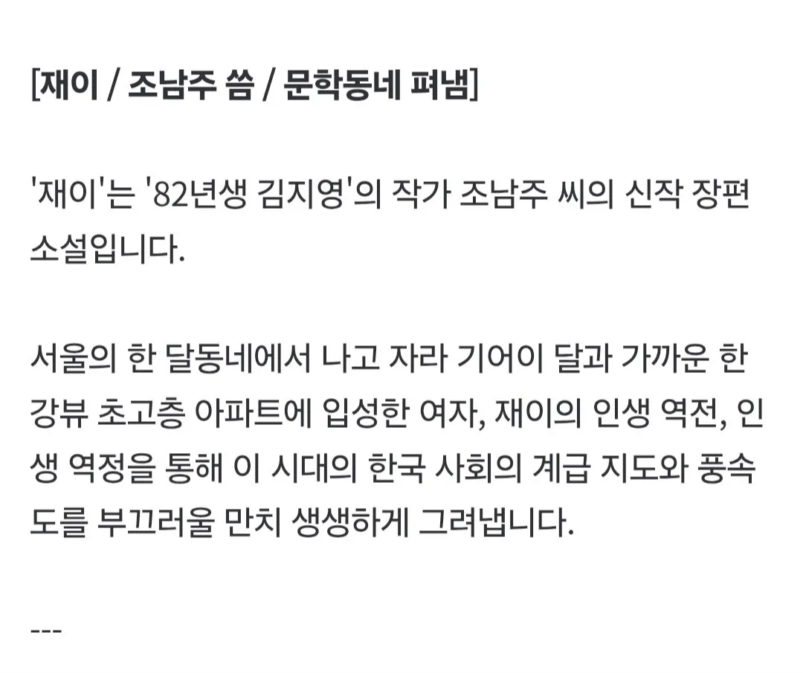

56 · 21 · 1 시간 전 · 원문

줴이줴이야
수집 당시 댓글 21개
옛계정은어디갔나몰라 · 4 시간 전
흔한 현판소재네
킴취워리오 · 4 시간 전
배아픈건 못참는 민족이라
스테고사우루스 · 4 시간 전
판타지소설
임대사업자 · 4 시간 전
가능맨 · 2 시간 전
째째이야!!!!
강알리 · 1 시간 전
이모티콘혐오자 · 1 시간 전
보르노잖아
개붕야호 · 1 시간 전
승자의줘팸터 · 1 시간 전
채재희야
즐겁다콘땜에가입 · 1 시간 전
자전적 이야기일거같다는 생각이 .. 82년생 소설 대박나서 한강뷰 산걸까
↳ 답글 · 바위게맛살 · 1 시간 전
나도 이 생각했는데
파월 · 1 시간 전
파크애비뉴의 영장류를 감명깊게 읽으셨나
깊숙 · 1 시간 전
죄이
준구 · 1 시간 전
재이 스치는 바람에~
지급요청서 · 1 시간 전
웹소설이 순문학인 척 하나
혼모노 · 1 시간 전
황럼프 · 1 시간 전
무궁확곷이피었습니다 보는기분
봐바라 · 1 시간 전
페미코인으로 한강뷰 아파트까지
Aquamarine · 55 분 전
양판소;
초뒤에개드립폭파됨 · 52 분 전
Yegor · 3 분 전
재재이야


흔한 현판소재네